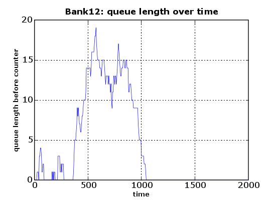
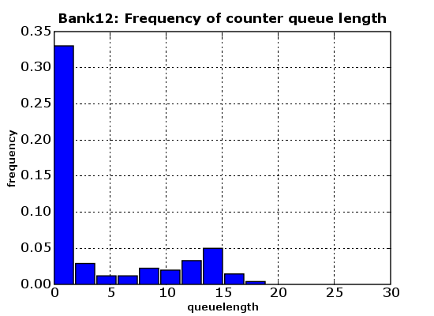

This document deals with producing production-quality plots from SimPy simulation output using the matplotlib library. Matplotlib is known to work on linux, unix, MS Windows and OS X platforms. This library is not part of the SimPy distribution and has to be downloaded and installed separately.
Simulation programs normally produce large quantities of output which needs to be visualized, e.g. by plotting. These plots can help with aggregating data, e.g. for detecting trends over time, frequency distributions or determining the warm-up period of a simulation model experiment.The capabilities of matplotlib exceed those of SimPy's SimPlot. This is how matplotlib is described on its home page:
"matplotlib is a python 2D plotting library which produces publication quality figures in a variety of hardcopy formats and interactive environments across platforms. matplotlib can be used in python scripts, the python and ipython shell (ala matlab or mathematica), web application servers, and six graphical user interface toolkits."
The matplotlib screenshots (with Python code) at http://matplotlib.sourceforge.net/screenshots.html show the great range of quality displays the library can produce with little coding. For the investment in time in downloading, installing and learning matplotlib, the SimPy user is rewarded with a powerful plotting capability.
You can download matplotlib from
http://matplotlib.sourceforge.net/. Extensive installation instructions are
provided at
http://matplotlib.sourceforge.net/installing.html.
The matplotlib library can generate all the plot types of SimPlot, plus a lot more. This document is not going to show them all. Instead, it just presents an example with two plot outputs to demonstrate how easy the use of matplotlib is from SimPy.
As an example of how to use matplotlib with SimPy, here is a modified version of bank12.py from the Bank Tutorial:
001 #! /usr/local/bin/python 002 """ Based on bank12.py in Bank Tutorial. 003 This program uses matplotlib. It produces two plots: 004 - Queue length over time 005 - Histogram of queue length 006 """ 007 from SimPy.Simulation import * 008 import pylab as pyl 009 from random import Random 010 ## Model components 011 class Source(Process): 012 """ Source generates customers randomly""" 013 def __init__(self,seed=333): 014 Process.__init__(self) 015 self.SEED = seed 016 def generate(self,number,interval): 017 rv = Random(self.SEED) 018 for i in range(number): 019 c = Customer(name = "Customer%02d"%(i,)) 020 activate(c,c.visit(timeInBank=12.0)) 021 t = rv.expovariate(1.0/interval) 022 yield hold,self,t 023 class Customer(Process): 024 """ Customer arrives, is served and leaves """ 025 def __init__(self,name): 026 Process.__init__(self) 027 self.name = name 028 029 def visit(self,timeInBank=0): 030 arrive=now() 031 yield request,self,counter 032 wait=now()-arrive 033 wate.append(wait) 034 tme.append(now()) 035 waitMonitor.tally(wait) 036 tib = counterRV.expovariate(1.0/timeInBank) 037 yield hold,self,tib 038 yield release,self,counter 039 class Observer(Process): 040 def __init__(self): 041 Process.__init__(self) 042 def observe(self): 043 while True: 044 yield hold,self,5 045 q.append(len(counter.waitQ)) 046 t.append(now()) 047 ## Model 048 def model(counterseed=3939393): 049 global counter,counterRV,waitMonitor 050 counter = Resource(name="Clerk",capacity = 1) 051 counterRV = Random(counterseed) 052 waitMonitor = Monitor() 053 initialize() 054 sourceseed=1133 055 source = Source(seed = sourceseed) 056 activate(source,source.generate(100,10.0)) 057 ob=Observer() 058 activate(ob,ob.observe()) 059 simulate(until=2000.0) 060 return waitMonitor.mean() 061 q=[] 062 t=[] 063 wate=[] 064 tme=[] 065 ## Experiment data 066 sourceSeed=333 067 ## Experiment 068 model() 069 ## Output 070 pyl.figure(figsize=(5.5,4)) 071 pyl.plot(t,q) 072 pyl.title("Bank12: queue length over time", 073 fontsize=12,fontweight="bold") 074 pyl.xlabel("time",fontsize=9,fontweight="bold") 075 pyl.ylabel("queue length before counter",fontsize=9,fontweight="bold") 076 pyl.grid(True) 077 pyl.savefig(r".\bank12.png") 078 080 pyl.clf() 081 n, bins, patches = pyl.hist(q, 10, normed=True) 082 pyl.title("Bank12: Frequency of counter queue length", 083 fontsize=12,fontweight="bold") 084 pyl.xlabel("queuelength",fontsize=9,fontweight="bold") 085 pyl.ylabel("frequency",fontsize=9,fontweight="bold") 086 pyl.grid(True) 087 pyl.xlim(0,30) 088 pyl.savefig(r".\bank12histo.png")
Here is the explanation of what the various matplotlib-related code lines do:
Line
Explanation 008 Imports the pylab module from matplotlib. Note that the pylab import is not of the form "from pylab import *", as there are clashes between the names in the matplotlib and SimPy namespaces. 070 Sets the size of the figures following to a width of 5.5 and a height of 4 inches 071 Plot the series of queue-length values (q) over their observation times series (t). Series q and t must have the same length. 072 Sets the figure title, its font size, and its font weight. 074 Sets the x-axis label, its font size, and its font weight. 075 Sets the y-axis label, its font size, and its font weight. 076 Gives the graph a grid 077 Saves the plot under the given name 080 Clears the current figure (e.g., resets the axes values from the previous plot) 081 Makes a histogram plot of the queue-length series (q) with 10 bins. The normed parameter makes the frequency counts relative to 1 082 Sets the title etc. 084 Sets the x-axis label etc. 085 Sets the y-axis label etc. 086 Gives the graph a grid 087 Limits the x-axis to the range[0..30] 088 Saves the plot under the given name
Running the program above results in two PNG files. The first (. . . /bank12.png) shows the queue length over time:

The second output file (. . ./bank12histo.png) is a histogram of the frequency of the length of the queue:

The small example above shows already the power, flexibility and quality of graphics provided by matplotlib. Almost anything (fonts, graph sizes, line types, number of series in one plot, number of subplots in a plot, . . . ) is under user control by setting parameters or calling functions. Admittedly, it initially takes a lot of reading in the extensive documentation and some experimentation, but the results are definitely worth the effort!